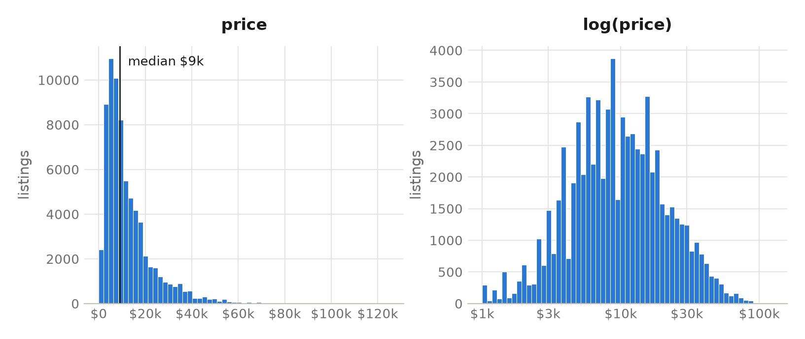
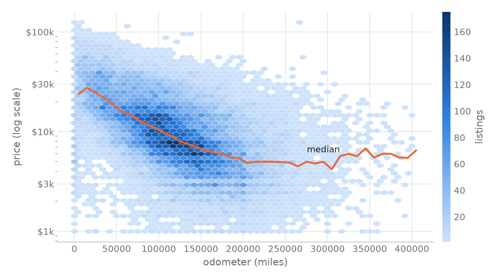
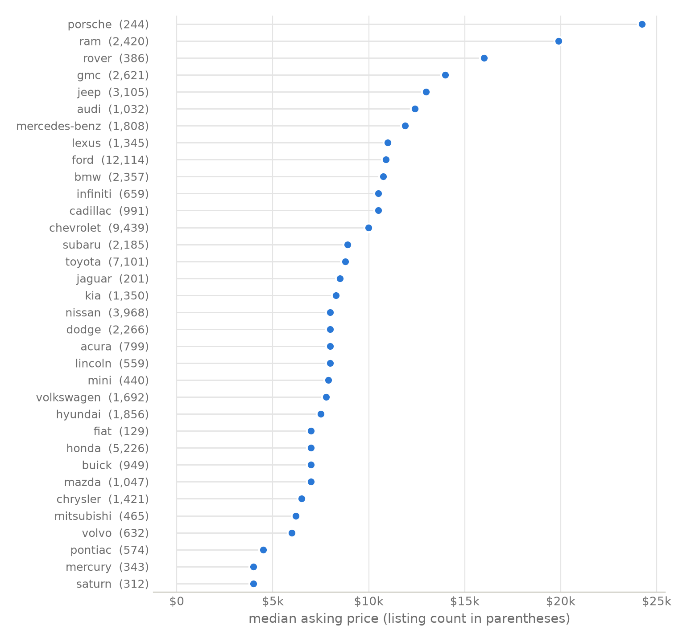
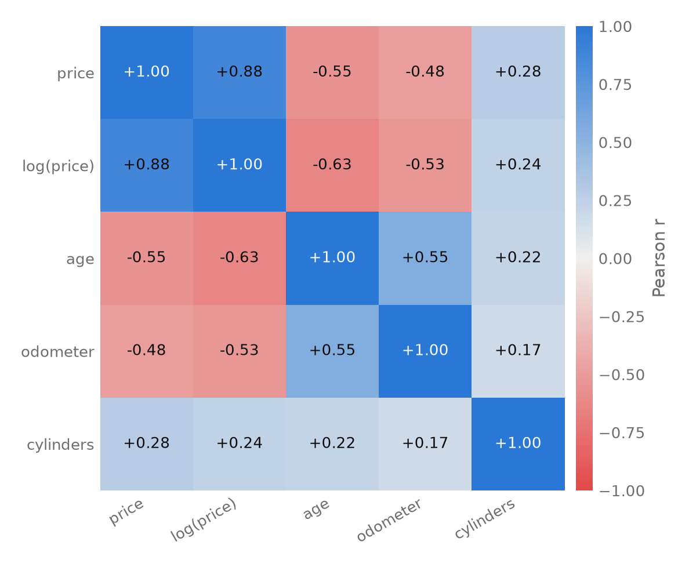
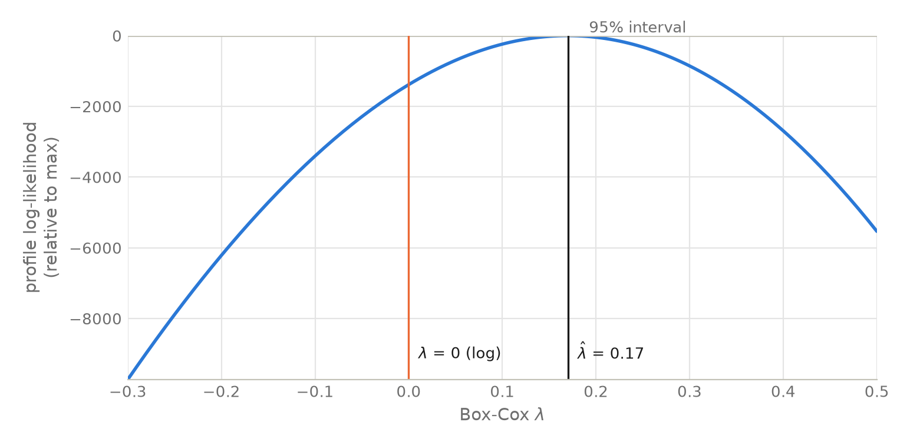
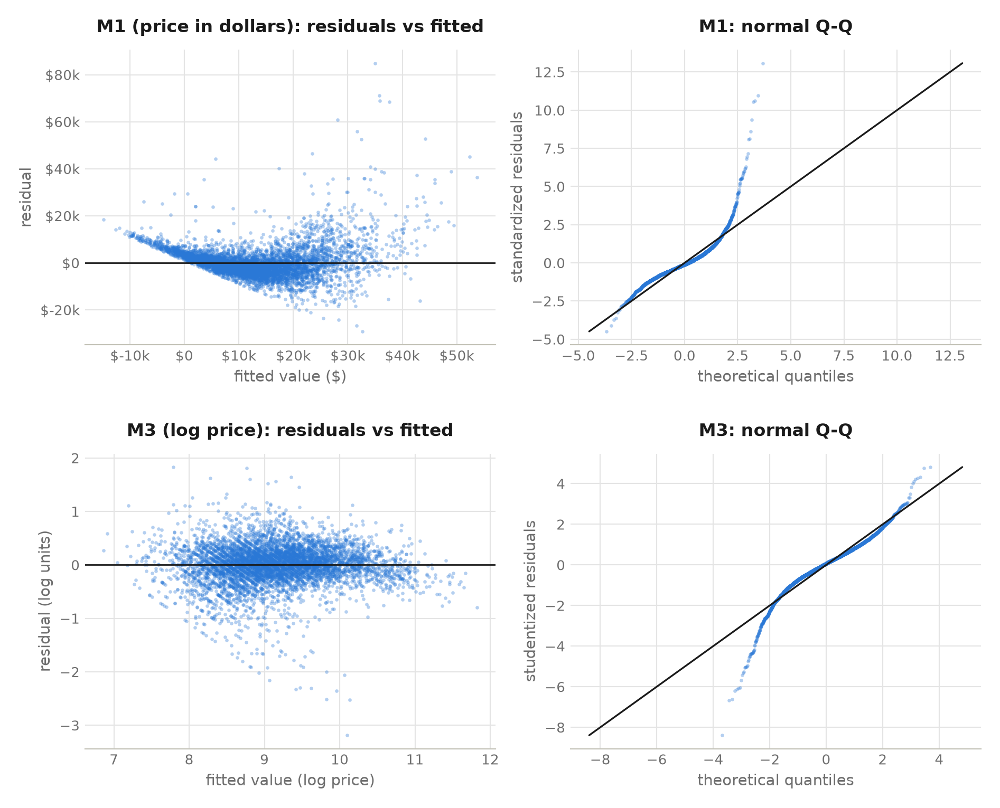
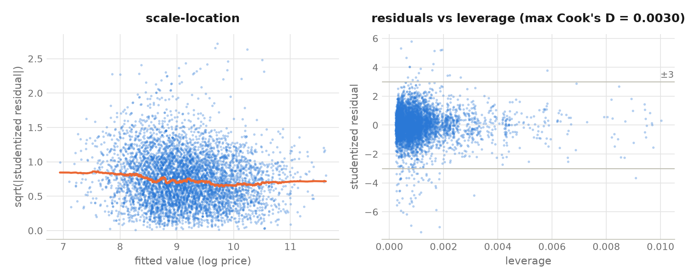
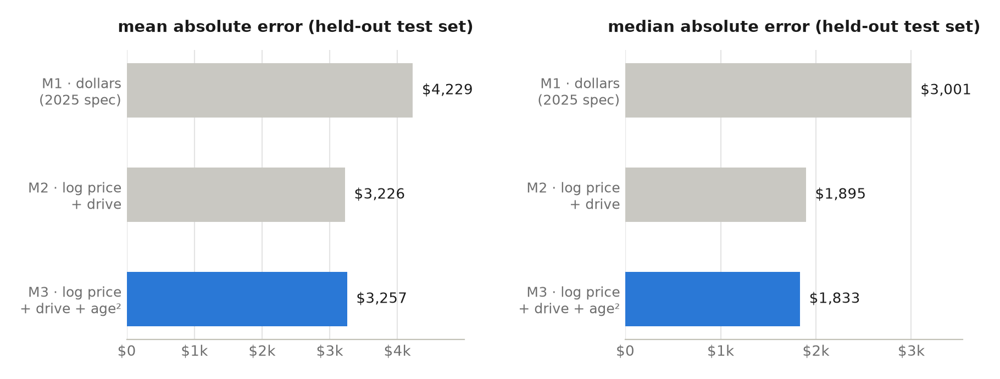
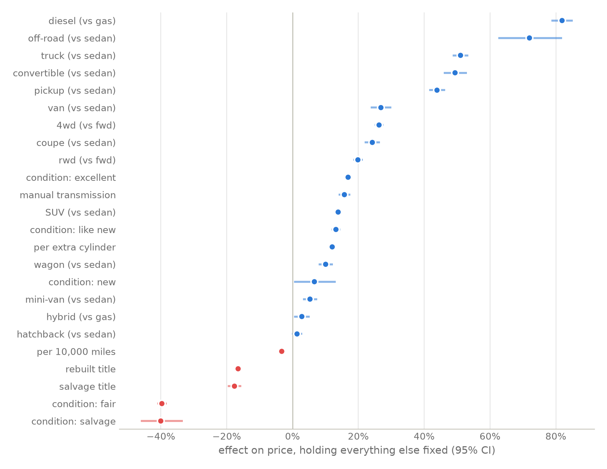
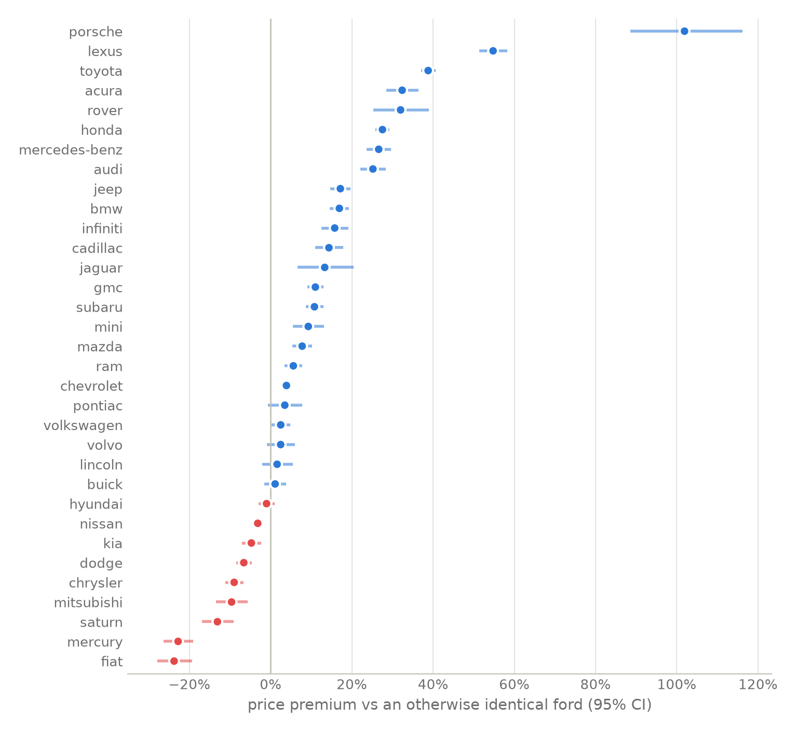

Analyzing and Predicting Used Car Prices, Take Two — The Technical Write-Up
This is the full, assumption-by-assumption version of the write-up; the short version tells the same story in a five-minute read. In March 2025 I built my first linear regression project: a model that predicts what a used car should sell for, trained on Craigslist listings. It worked, and I was proud of it. It also cut every corner I didn't yet know existed. This is the same project done again with the full toolkit from my McMaster stats courses (stats 3a03, math 3mb3) — the transformation chosen by Box-Cox instead of by truncating the data, every assumption checked instead of assumed, every claim carrying a confidence interval, and every headline number measured on listings the model never saw.
Contents
- Why do it again
- The data, cleaned honestly
- What the data looks like
- Letting Box-Cox choose the transformation
- Three models, two nested tests
- Checking the assumptions
- How well it predicts
- What moves the price
- The depreciation curve
- Six cars, including my dream car
- What I'd still improve
- Reproduce it
- References
Why do it again
The 2025 version got the big things right: real data, a sensible set of predictors, a train/test split, and honest writing about where it failed. But rereading it after finishing my degree, three things stood out.
- It counted the same cars many times. Craigslist sellers cross-post one car in several cities. 40% of the raw rows are exact duplicates on year, make, model, price, and odometer. Duplicate rows aren't independent observations, and independence is the assumption every standard error in a regression rests on.
- It solved skewness by deleting the right tail. Capping prices at the 95th percentile ($44,500) made the histogram look nicer — by removing every luxury car from the data. That's why the old model missed my dream car, a Lexus IS F, by 31%: it had never been allowed to see a car like it. The textbook fix for right-skew isn't truncation, it's a transformation, and there's a formal tool for choosing one.
- It stopped at R². No residual plots, no leverage, no multicollinearity check, no confidence intervals, no prediction intervals. The model's error was quoted as a single number (±$3,781) when the honest answer is a distribution.
| 2025 version | This version | |
|---|---|---|
| Response | Price in dollars | Log(price), chosen by Box-Cox |
| Duplicate listings | Kept | Removed (171,428 rows) |
| Luxury cars | Deleted above $44,500 | Kept to $125,000 |
| Classic cars | Mixed in (back to 1980) | Scoped out (1996+); they appreciate, not depreciate |
| Diagnostics | — | Residuals, Q-Q, scale-location, leverage, Cook's distance, VIF, Breusch-Pagan |
| Inference | P-values from default standard errors | Heteroskedasticity-robust (HC1) standard errors, intervals and tests |
| Model choice | One model | Three nested models compared with formal tests, AIC, and cross-validation |
| Uncertainty | One MAE number | 95% prediction intervals, coverage verified out of sample |
| Headline numbers | In-sample | Held-out test set + 5-fold cross-validation |
The data, cleaned honestly
The data is the same Kaggle snapshot of Craigslist listings (426,880 rows, April–may 2021) scraped by Austin Reese. Instead of one big filter, every cleaning decision is applied one step at a time and logged, so the whole funnel is auditable — the table below is generated straight from the pipeline. Rows missing any of the duplicate-key fields are left alone at the first step: a duplicate you can't verify isn't a duplicate.
| Step | Why | Rows kept | Removed |
|---|---|---|---|
| Raw listings | Kaggle export, April–may 2021 | 426,880 | — |
| De-duplicate reposts | Same year/make/model/price/odometer posted in several cities is one car, not many | 255,452 | 171,428 |
| Price $1,000–$125,000 | $0 means "call for price"; the $3.7 billion Tundra is a typo. Luxury cars stay in | 227,408 | 28,044 |
| Odometer 100–400,000 mi | Zero and ten-million-mile readings are data entry errors | 221,266 | 6,142 |
| Model year 1996+ | Older cars are collector cars; they appreciate, which is a different pricing regime | 206,883 | 14,383 |
| Fuel gas/diesel/hybrid | "Other" is unlabeled; the few "electric" rows are mostly mislabeled gas cars | 196,891 | 9,992 |
| Transmission automatic/manual | "Other" is unlabeled, not a category | 187,620 | 9,271 |
| Title clean/rebuilt/salvage | Lien, missing and parts-only listings aren't straightforward sales | 183,620 | 4,000 |
| Known body type, no buses | Unlabeled body types dropped; buses aren't passenger cars | 131,882 | 51,738 |
| No motorcycles | The Harley-Davidsons still standing at this step are motorcycles in a car dataset | 131,854 | 28 |
| Complete cases | Rows missing any modeling variable | 72,147 | 59,707 |
| Brands with 100+ listings | Can't estimate a brand effect from 14 Alfa Romeos, 7 Ferraris and 6 Aston Martins | 72,120 | 27 |
The biggest judgment call is complete cases: requiring cylinders, condition and drive costs 60k rows. The trade is deliberate — those variables earn their keep in the model, and the alternative (imputing or "not stated" levels) is on the future-work list.
The final sample: 72,120 listings, 34 brands, model years 1996–2022, prices $1,000 to $125,000. About 2.4% of these cars sit above the old $44,500 cap — the segment the 2025 model was never allowed to learn.
What the data looks like
Asking prices are strongly right-skewed (skewness 2.46): median $9,000, mean $12,857, and a long tail of trucks and luxury cars. On a log scale the same distribution is nearly symmetric (skewness −0.03). That's the first hint that the model should think in percentages, not dollars.

Price against age and against mileage, with price on a log scale. The median line falls roughly straight for the first decade — which on a log axis means a constant percentage drop per year — then flattens: old cars stop losing value once they're cheap.


Brands sort themselves before any model is fit — Porsche's median asking price is six times Saturn's. (Ram and GMC rank high not because trucks are luxurious but because their listings are trucks; the regression later separates the truck effect from the brand effect.)

The 2025 version's correlation analysis, redone on the log scale it should have used: log(price) correlates with age at −0.63 and odometer at −0.53 (stronger than the −0.55 and −0.48 in dollar space), with cylinders a mild +0.24. Age and odometer are themselves correlated (+0.55) — cars age and accumulate miles together — which is exactly why the regression, not the correlation table, gets the last word on who does what.

Letting Box-Cox choose the transformation
The 2025 write-up ended with "I would like to apply a natural logarithm to the price variable". This version starts there, but doesn't take the log on faith. The Box-Cox procedure fits the full covariate model at every power transformation of the response — λ = 1 is untransformed dollars, λ = 0 is the log — and profiles the likelihood.

The MLE is λ̂ = 0.18 with a razor-thin 95% interval of (0.175, 0.180) — with 57,715 observations, the likelihood can tell apart values of λ that are practically identical, so the interval excludes both 0 and 1. The honest reading follows the textbook advice: λ = 1 (dollars) is emphatically rejected; λ̂ sits near zero; and among nearby values, λ = 0 is the one with an interpretation — coefficients become percentage effects on price. I use the log, and let the diagnostics section judge whether it was enough.
Three models, two nested tests
Three specifications, each an answer to "what did the change buy?". M1 is the 2025 model refit on the improved sample; M2 changes the response to log(price) and adds drive wheels (a variable the 2025 version threw away); M3 adds a quadratic age term, because the depreciation curve visibly flattens. All three are fit by OLS on the same 80% training split (seed 138, same as 2025), with the same 20% held out.
log(price) = β₀ + β₁·age + β₂·age² + β₃·odometer + β₄·cylinders
+ brand + condition + fuel + title + transmission + body type + drive + ε
| Model | Response | Params | R² | Adj. R² | AIC |
|---|---|---|---|---|---|
| M1 — the 2025 spec | Dollars | 57 | 0.670 | 0.669 | 1,177,230 |
| M2 — log price, + drive | Log | 59 | 0.766 | 0.766 | 53,625 |
| M3 — M2 + age² | Log | 60 | 0.772 | 0.772 | 52,129 |
R² is not comparable between the dollar and log rows (different response scales) — the out-of-sample comparison below is the fair one. AIC is comparable only between M2 and M3.
The additions are tested formally, the way nested models should be. Because Breusch-Pagan (next section) rejects constant error variance, both tests are run as Wald tests on the heteroskedasticity-robust (HC1) covariance; the classical partial F-tests, which assume the rejected constant variance, agree on both counts.
- Curvature. Adding age² : robust Wald f(1, 57,655) = 986.0, p < 2.2×10⁻¹⁶ (classical partial f = 1,515.7). The depreciation curve genuinely bends — the constant-percentage-per-year story is too simple.
- Brand. Dropping all 33 brand dummies from M3: robust Wald f(33, 57,655) = 223.6, p < 2.2×10⁻¹⁶ (classical f = 210.4). Who made the car matters even after age, mileage, size and body type are held fixed.
Multicollinearity, the thing correlation tables can't adjudicate, is checked with variance inflation factors on M2: the largest is 2.87 (4WD), and no term exceeds the usual concern threshold of 5 (full table in VIF.csv). Age and odometer are correlated, but not enough to destabilize the coefficients.
Checking the assumptions
This is the section the 2025 version didn't have. The residual plots below are the before-and-after argument for the log transformation: in dollar space (M1, top row) the residuals fan out as fitted values grow — textbook heteroskedasticity — and the Q-Q plot bends hard away from normal in both tails. In log space (M3, bottom row) the residual band is level and the Q-Q plot hugs the line through the central 99%+ of the data, with modest heavy tails.


The formal version of the same story:
- Heteroskedasticity. Breusch-Pagan rejects constant variance for both models (with n = 57,715 it detects even trivial patterns; the lm statistic falls by more than half from M1 to M3, 3,400 → 1,593). The remedy is not to pretend otherwise: every standard error, confidence interval, p-value and nested-model test quoted in this report uses heteroskedasticity-robust (HC1) covariance, so the inference doesn't lean on the rejected assumption.
- Influence. The largest Cook's distance in the training fit is 0.003 — far below even the most conservative rule of thumb. With 57,715 observations, no single Craigslist ad moves the model.
- Normality. Mild heavy tails remain in the log model. With this sample size the coefficient inference is protected by the central limit theorem; where normality actually matters is the prediction intervals, so instead of trusting it I measure their coverage below.
How well it predicts
Every number in this section is computed on the 14,405 held-out listings, with 5-fold cross-validation on the training split as a second opinion. Predictions from the log models are converted back to dollars with Duan's smearing estimator (a naive exp() would be biased low; the smearing factor here is 1.071).
| Held-out test set | MAE | Median ae | MAPE | RMSE | R² (dollars) |
|---|---|---|---|---|---|
| M1 — the 2025 spec | $4,265 | $3,032 | 58.2% | $6,587 | 0.667 |
| M2 — log + drive | $3,266 | $1,868 | 33.7% | $5,806 | 0.741 |
| M3 — final | $3,300 | $1,835 | 33.3% | $6,023 | 0.722 |
Cross-validation agrees: MAE $4,236 / $3,215 / $3,250, MAPE 58.3% / 34.1% / 33.7% for M1 / M2 / M3.
The log transformation, not extra complexity, does the heavy lifting: on identical data the 2025 specification's typical (median) error is $3,032, and thinking in percentages cuts it to $1,835 — 39% smaller — while MAPE drops from 58% to 33%. Between M2 and M3 the choice depends on the loss you care about: M3 is better in log space (AIC 52,129 vs 53,625), on median error and on MAPE; M2 edges it on the mean-type dollar metrics (MAE, RMSE, dollar R²), which are dominated by the priciest cars. I take M3 as the final model — its errors are smaller for the typical car, and its quadratic term is what makes the depreciation curve below believable — and report the comparison so the trade-off is visible.


The part I care most about: uncertainty that means what it says. The final model's 95% prediction intervals, built in log space and exponentiated, cover the true price for 95.3% of the 14,405 held-out cars — within a third of a point of nominal. Coverage holds across the price range, from 93.4% in the cheapest quartile of predictions to 97.2% in the priciest. The intervals are honest and they are wide (the upper bound is typically ~4.4× the lower): a single regression on ad-listed features genuinely cannot pin a used car's price much tighter, and pretending otherwise is what a point forecast does.
What moves the price
Because the response is log(price), each coefficient converts to a percentage effect on price, holding everything else fixed. All intervals below are 95%, from robust standard errors. These are associations in 2021 Craigslist asking prices, not causal effects — a diesel badge can't be bolted onto a Corolla to raise its value 82%.

- Every year of age costs about 11.8% of the price (CI 11.5–12.1) when the car is new, easing to roughly 8% per year at age ten and under 5% by age twenty — that's the age² term flattening the curve.
- Every 10,000 miles costs a further 3.3% (CI 3.2–3.4), independent of age.
- Diesel is the biggest premium outside the brand effects: +82% (CI 79–85). In 2021, used diesel pickups were their own seller's market.
- The manual transmission premium the 2025 version spotted survives the rebuild: +15.8% (CI 14.0–17.5). Automatics took over the commodity market; the manuals that remain are enthusiasts' cars.
- A branded history is expensive: a rebuilt title costs 16.5%, a salvage title 17.6%, and cars whose condition is salvage lose 40%.
- Honesty check: not every coefficient earns a headline. The hatchback effect (+1.4%, CI −0.2 to +2.9, p = 0.08) is not statistically distinguishable from zero; the hybrid premium is real but small (+2.8%, CI 0.5–5.2); and self-reported "new" condition adds a noisy +6.6% (CI 0.5–13.1) — less than "excellent" does. A report that only prints impressive coefficients is advertising, not analysis.
Brand effects, now measured against an otherwise identical Ford rather than as raw medians: Porsche commands +110%, Lexus +55%, Toyota +39% — while Fiat (−24%) and Mercury (−22%) sit at the bottom. The 2025 version's "price boosters" table mixed brand prestige with body type; holding body type fixed is what separates "Porsches are expensive" from "trucks are expensive".

The depreciation curve
The model's age terms, drawn as a curve for a concrete car (a 4-cylinder automatic Toyota sedan, clean title, good condition, carrying the median mileage for its age): it sheds half its nearly-new value by year five, and by year twelve it's a $6,000 car. This is the shape the quadratic term buys — the 2025 model's straight line in dollar space couldn't fall fast early and flatten late at the same time.

Six cars, including my dream car
The 2025 write-up tested the model on three cars I found on Autotrader: a Corolla, a RAV4, and the Lexus IS F I still daydream about. Those three are re-scored below — but scoring 2025 Canadian listings with a model of the April–may 2021 us market mixes two questions: is the model good, and has the market moved? (It has.) So the fair test comes first: the same three archetypes scored against 2021 listings the model didn't fit. The Corolla and RAV4 come straight from the held-out test split. The dataset's only real is f landed on the training side of the split, so it's scored leave-one-out: the model is refit without that listing before predicting it — out of sample by construction (and with the largest Cook's distance anywhere at 0.003, removing one row barely moves the fit anyway).
| Car | Actual | Predicted | 95% interval | Error |
|---|---|---|---|---|
| 2021 listings, out of sample — the in-market test | ||||
| 2015 Toyota Corolla le, 125k mi | $9,990 | $12,357 | $5,478 – $24,293 | +24% |
| 2017 Toyota RAV4, 27k mi | $23,991 | $30,498 | $13,520 – $59,959 | +27% |
| 2008 Lexus IS F, 53k mi (leave-one-out) | $34,999 | $17,750 | $7,867 – $34,907 | −49% |
| 2025 Autotrader listings — four years of market drift | ||||
| 2015 Toyota Corolla, 82k mi | $10,048 | $8,366 | $3,709 – $16,448 | −17% |
| 2022 Toyota RAV4, 56k mi | $20,944 | $26,523 | $11,757 – $52,145 | +27% |
| 2009 Lexus IS F, 51k mi | $29,332 | $12,421 | $5,505 – $24,427 | −58% |
The 2025 version fed the Corolla's odometer in kilometres into a model expecting miles; the re-scores above use the converted 82k miles.

The Toyotas behave: both Corollas and both RAV4s fall inside their intervals, even across four years of market drift. The IS F does not behave, twice — four of the six actual prices land inside their intervals, and both misses are the same car. The 2021 is F's $34,999 asking price sits ninety-two dollars above its interval's upper edge; the 2025 listing sits about $4,900 above its. And this time the model can't blame the data. The reason is visible in the model's own structure: to a manufacturer-level regression, an is f is "a 13-year-old 8-cylinder Lexus sedan", I.e. A used ls 460. The 500-horsepower badge lives in the model column, which carries 9,650 distinct values and stayed out of this regression. The honest conclusion isn't that the car is mispriced — it's that a limited-production performance car's value is its model name, and a brand-level model has a measurable ceiling there. (The 2025 version "did better" on the IS F — 31% off instead of 58% on the same Autotrader listing — but by accident: its straight-line depreciation overvalued all old cars, which happened to flatter the one old car that actually holds its value.)
What I'd still improve
- Model-level effects. The IS F problem. Random effects or partial pooling over the ~9,600-value model column (or even a curated "enthusiast car" flag) would price special cars without exploding the design matrix.
- Asking vs selling. Craigslist prices are asks, not transactions. Every effect here is an effect on what sellers hope, measured precisely.
- A time index. The model is a snapshot of April–may 2021 — the start of the wildest used-car market in memory. A multi-period dataset with a month index would separate the car from the market and make the Autotrader comparison clean.
- Missingness. Complete-case filtering cost 60k rows; condition, cylinders and drive missingness is unlikely to be random. Explicit "not stated" levels or imputation would test how much that choice matters.
- Region. The state column sat unused; rust-belt and sun-belt cars price differently, and a 4WD truck is worth more in Montana than in Florida (an interaction, which is the next tool in the box).
Reproduce it
Everything on this page — every number, table and figure, in both color schemes — is generated by one pipeline in the repository:
data/raw/vehicles.csv # kaggle export (1.4 gb, see readme for link) analysis/clean.py # the attrition table above analysis/model.py # fits, box-cox, nested tests, vif, robust inference analysis/diagnostics.py # residual and influence figures (run model.py first) analysis/validate.py # held-out metrics, cv, interval coverage, the six cars analysis/eda.py, results_figs.py, style.py python analysis/run_all.py # raw csv in, report assets out
The cleaned modeling table ships with the repo as data/cars_clean.parquet, so everything after the cleaning stage can be reproduced without the 1.4 gb download.
References
- Austin Reese, used cars dataset (Craigslist listings, Kaggle)
- Course material from STATS 3A03 (Applied Regression) and MATH 3MB3 (Mathematical Modelling), McMaster University
- Box & cox (1964), "an analysis of transformations"; Duan (1983), "smearing estimate: a nonparametric retransformation method"
- Seabold & Perktold, statsmodels; hunter, matplotlib; McKinney, pandas
- The 2025 version of this project, kept as-is: it's the "before" picture